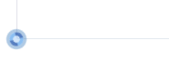

Version ${version}
Site web
Grammalecte est un correcteur grammatical open source sous licence GPL 3
Grammalecte remercie

et tous ceux qui l’ont soutenu
OPTIONS D’INTERFACE
Menu contextuel
Les commandes permettant de lancer Grammalecte sont trouvables via le menu contextuel.

Boutons d’accès
Grammalecte peut aussi afficher un bouton d’accès au menu en bas à gauche des zones de texte pour accéder aux fonctionnalités existantes.


Vous pouvez activer ou désactiver l’affichage de ces boutons sur les zones de texte. Il existe deux types de zones de texte.
Ces zones de texte sont les champs de formulaire usuels pour saisir du texte. Ils ne permettent que la saisie de texte brut, sans fioritures.
Ces zones de texte sont des sections de page web éditables. Il est fréquent que ces zones de texte apparaissent comme des “textareas” standard. Il est aussi fréquent que ces zones de texte soient couplées avec toutes sortes de logiciels (de simples scripts d’aide à la mise en page ou des applications complexes). Ces zones de texte permettent l’affichage de texte enrichi (italique, gras, hyperlien, images, etc.). Il est assez fréquent que des “textareas” invisibles se cachent derrière ces “nodes” éditables.
Raccourcis clavier
CTRL+MAJ+6
Conjugueur (dans un onglet)
CTRL+MAJ+7
Conjugueur (dans une fenêtre)
OPTIONS GRAMMATICALES
OPTIONS ORTHOGRAPHIQUES
Section inactive. Le nouveau système d’extension de Firefox (WebExtension) ne propose pas encore d’interface de programmation pour le correcteur orthographique.
Ce dictionnaire propose l’orthographe telle qu’elle est écrite aujourd’hui le plus couramment. C’est le dictionnaire recommandé si le français n’est pas votre langue maternelle ou si vous ne désirez qu’une seule graphie correcte par mot.
Il s’agit du dictionnaire “Moderne”, avec des graphies classiques en sus, certaines encore communément utilisées, d’autres désuètes. C’est le dictionnaire recommandé si le français est votre langue maternelle.
Avec ce dictionnaire, seule l’orthographe réformée est reconnue. Attendu que bon nombre de graphies réformées sont considérées comme erronées par beaucoup, ce dictionnaire est déconseillé. Les graphies passées dans l’usage sont déjà incluses dans le dictionnaire “Moderne”.
Ce dictionnaire contient les variantes graphiques, classiques, réformées, ainsi que d’autres plus rares encore. Ce dictionnaire est déconseillé à ceux qui ne connaissent pas très bien la langue française.
ZONE DE TEST
Section de contrôle pour le développement du logiciel…
Page de test